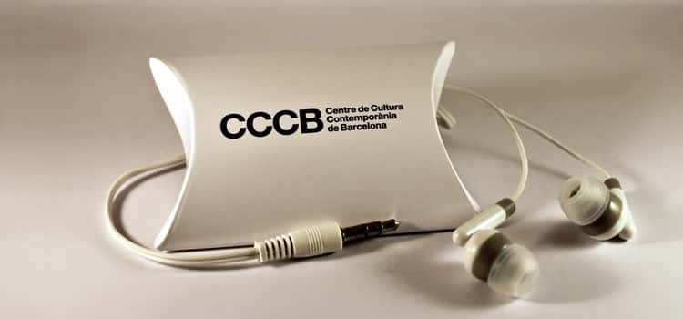

Bei Nubart häufig gestellte Fragen (FAQ)
Allgemein
Die individuellen Codes, die den Karten gedruckt sind, agieren wie ein
Schlüssel,
der einen exklusiven Zugang zum digitalen Inhalt ermöglicht. Der
Besucher kann den QR-Code scannen, um direkt an den Inhalt zu gelangen, oder, wenn
er
mit QR-Codes nicht vertraut ist, einen alphanumerischen Code in einer Webseite eingeben.
Bei Nubart haben wir die LWAC-Technologie(int. pat. pending) entwickelt, die unsere Kärtchen nicht übertragbar machen.
Mittels LWAC kann der Inhalt so oft wie erwünscht abgerufen werden, sowohl vom Smartphone wie vom PC oder Tablet aus, sogar Monate oder Jahre nach dem Besuch. Aber die Karte kann nicht von einer anderen Person verwendet werden.
Auf diese Weise stellen wir sicher, dass der Audioguide einen Verkaufswert hat und garantieren die hohe Qualität der von uns ermittelten anonymen Daten.
Darüber hinaus können wir mit diesen individuellen Codes eine ganze Reihe von Dienstleistungen anbieten, die mit einer herkömmlichen PWA nicht möglich wären: Gruppenführungssystem, Catch & Answer-Spiel, spezielle Rabatte für den Karteninhaber...
Bei Nubart haben wir die LWAC-Technologie(int. pat. pending) entwickelt, die unsere Kärtchen nicht übertragbar machen.
Mittels LWAC kann der Inhalt so oft wie erwünscht abgerufen werden, sowohl vom Smartphone wie vom PC oder Tablet aus, sogar Monate oder Jahre nach dem Besuch. Aber die Karte kann nicht von einer anderen Person verwendet werden.
Auf diese Weise stellen wir sicher, dass der Audioguide einen Verkaufswert hat und garantieren die hohe Qualität der von uns ermittelten anonymen Daten.
Darüber hinaus können wir mit diesen individuellen Codes eine ganze Reihe von Dienstleistungen anbieten, die mit einer herkömmlichen PWA nicht möglich wären: Gruppenführungssystem, Catch & Answer-Spiel, spezielle Rabatte für den Karteninhaber...

Die Tonspuren unserer Audioguides werden gestreamt,
d. h., nur die vom Besucher angeklickten Spuren verbrauchen
mobile Daten. Damit unterscheiden wir uns von vielen Apps,
die das Herunterladen des gesamten Inhalts erfordern.
Die angeklickten Tonspuren verbrauchen 0,46 MB pro
Minute, also 5 mal weniger als Musikstreaming-Dienste
wie Spotify.
Wenn Ihr Haus über eine gute Datenabdeckung verfügt ist es also nicht unbedingt erforderlich, dass Sie Ihren Besuchern ein freies WLAN anbieten, um unsere Audioguide-Karten anzubieten, zumal EU-Bürger inzwischen kein Roaming mehr zahlen müssen.
Wir haben jedoch einen Offline-Modus für Häuser mit schlechter Netzabdeckung entwickelt. In unserem Offline-Modus werden alle Tonspuren vorübergehend in den Arbeitsspeicher (RAM) des Mobiltelefons heruntergeladen, ohne dass die Installation einer App erforderlich wäre. Auf diese Weise können die Tonspuren nach dem Herunterladen auch offline gehört werden.
Wenn Ihr Haus über eine gute Datenabdeckung verfügt ist es also nicht unbedingt erforderlich, dass Sie Ihren Besuchern ein freies WLAN anbieten, um unsere Audioguide-Karten anzubieten, zumal EU-Bürger inzwischen kein Roaming mehr zahlen müssen.
Wir haben jedoch einen Offline-Modus für Häuser mit schlechter Netzabdeckung entwickelt. In unserem Offline-Modus werden alle Tonspuren vorübergehend in den Arbeitsspeicher (RAM) des Mobiltelefons heruntergeladen, ohne dass die Installation einer App erforderlich wäre. Auf diese Weise können die Tonspuren nach dem Herunterladen auch offline gehört werden.
Ja, wir können ein benutzerdefiniertes Layout für Ihr Unternehmen erstellen, in dem Sie
u.a. die Farben, die Fonts, den Player, die Abstände zwischen den Elementen und einen
Rahmen für die Bilder festlegen können.
Diese Sonderanfertigung ist kostenpflichtig.
Diese Sonderanfertigung ist kostenpflichtig.
Bei Nubart ist uns die Umwelt wichtig!
Sie können aussuchen, auf welchen umweltfreundlichen Materialien Ihre Karten gedruckt werden sollen:
Sie können aussuchen, auf welchen umweltfreundlichen Materialien Ihre Karten gedruckt werden sollen:
- Hochfesten Spezialkarton, FSC-zertifiziert.
- Recyceltes PVC.
- Biologisch abbaubares Bio-PVC.
Ja, das sind sie!
Der QR-Code auf der Karte wird in Relief gedruckt, so dass ihn Sehbehinderte mit den Fingerspitzen erkennen und mit dem QR-Scanner erfassen können.
Unser hauseigenes CMS wurde in Universal Design entwickelt.
Weitere Details finden Sie in unserem Blog:
Die Audioguides von Nubart sind barrierefrei
Der QR-Code auf der Karte wird in Relief gedruckt, so dass ihn Sehbehinderte mit den Fingerspitzen erkennen und mit dem QR-Scanner erfassen können.
Unser hauseigenes CMS wurde in Universal Design entwickelt.
Weitere Details finden Sie in unserem Blog:
Die Audioguides von Nubart sind barrierefrei
Audioguides
Wir wissen, dass die meisten Museen unter Personalmangel leiden und eine sehr hohe
Arbeitsbelastung haben.
Unser Ziel ist es, diese Belastung maximal zu reduzieren.
In der Regel benötigen wir nur Bilder und ein paar Informationen von Ihnen. Wir kümmern uns um alles andere, halten Sie über den Prozess auf dem Laufenden und suchen Ihre Zustimmung in den verschiedenen Phasen. Materialien, die Nubart für die Vorbereitung Ihres Audioguides benötigt
Unser Ziel ist es, diese Belastung maximal zu reduzieren.
In der Regel benötigen wir nur Bilder und ein paar Informationen von Ihnen. Wir kümmern uns um alles andere, halten Sie über den Prozess auf dem Laufenden und suchen Ihre Zustimmung in den verschiedenen Phasen. Materialien, die Nubart für die Vorbereitung Ihres Audioguides benötigt
Museen können die Audioguide-Kärtchen auf verschiedene Weisen verteilen.
Zum Beispiel:
Zum Beispiel:
- Die Karten im Eintritt einpreisen und kostenlos an die Besucher geben.
- Die Karten kostenlos als Teil einer Sponsoring-Partnerschaft geben.
- Die Karten zu einem kostendeckenden Preis extra verkaufen
- Die Karten mit Gewinn verkaufen
Unser gängigstes Modell ist der Verkauf der Karten als Produkt, mit fast allen unseren
digitalen Features. Sie können jederzeit neue Audioguide-Karten nachbestellen.
Für viel besuchte Museen, die die Audioguide-Karte in den Eintritt einpreisen möchten, können wir einen Pauschalvertrag anbieten.
Bei Museen und Sehenswürdigkeiten mit mehr als 100.000 Besuchern pro Jahr, die die Karte als Zusatzartikel verkaufen möchten, können wir eine Umsatzbeteiligung in Betracht ziehen.
Für viel besuchte Museen, die die Audioguide-Karte in den Eintritt einpreisen möchten, können wir einen Pauschalvertrag anbieten.
Bei Museen und Sehenswürdigkeiten mit mehr als 100.000 Besuchern pro Jahr, die die Karte als Zusatzartikel verkaufen möchten, können wir eine Umsatzbeteiligung in Betracht ziehen.
Heutzutage tragen die meisten Menschen ihre eigenen Kopfhörer mit sich. Aber wenn dies
nicht der Fall sein sollte, können Ihre Besucher die Lautstärke herunterdrehen, und
statt das Smartphone wie bei einem Telefonanruf zu benutzen, können sie den unteren
Lautsprecher ans Ohr halten. Da Audioguides kurze Tonspuren haben, die separat und nicht
kontinuierlich wie ein Hörbuch oder Musik gehört werden, ist dies kein großes Problem.
Viele unserer Kunden bieten keine Kopfhörer an.
Wenn Sie aber meinen, dass Mini-Kopfhörer in Ihrem Museum unerlässlich sind, können Sie sie bei uns bestellen und evt. sogar das Kästchen dazu mit Ihrem Museumslogo versehen.
Wenn Sie aber meinen, dass Mini-Kopfhörer in Ihrem Museum unerlässlich sind, können Sie sie bei uns bestellen und evt. sogar das Kästchen dazu mit Ihrem Museumslogo versehen.

Derzeit unterstützt unser System die folgenden Sprachen:
- Deutsch
- Englisch
- Spanisch
- Französisch
- Portugiesisch
- Italienisch
- Holländisch
- Katalanisch
- Baskisch
- Tschechisch
- Dänisch
- Finnisch
- Schwedisch
- Russisch
- Ukrainisch
- Ungarisch
- Polnisch
- Luxemburgisch
- Bulgarisch
- Arabisch
- Hebräisch
- Chinesisch (Mandarin)
- Japanisch
- Thailändisch
Gruppenführungssystem - Nubart Live
Etwa 20 MB pro Stunde. Viel weniger als das Hören von gestreamter Musik oder das
Anschauen von Videos!
Selbstverständlich! Unsere Mindestbestellmenge für personalisierte Karten beträgt 3.000 Stück.
Wenn Ihnen das unten abgebildete Nubart-Design gefällt, umweltfreundlich auf extra
starkem Karton gedruckt, beträgt unsere Mindestbestellmenge 500 Stück.
Wenn Sie individuell gestaltene Karten vorziehen, beträgt die Mindestbestellmenge 3.000 Stück.
Wenn Sie individuell gestaltene Karten vorziehen, beträgt die Mindestbestellmenge 3.000 Stück.

Wenn Sie unsere mit Nubart bedruckten Karten kaufen, bekommen Sie Zugang für zwei
Gästeführer pro Bestellung von 500 Karten.
Je mehr Karten Sie bestellen, desto mehr Gästeführer können auf unser System
zugreifen.
Wenn Sie unser professionelles Paket mit 5.000 Karten kaufen, ist die Anzahl der Führer unbegrenzt.
Wenn Sie unser professionelles Paket mit 5.000 Karten kaufen, ist die Anzahl der Führer unbegrenzt.
Eine kleine Verzögerung von weniger als einer Sekunde zwischen Sender und Empfänger (Latenz)
ist bei Kommunikation über das Internet unvermeidlich, unabhänging davon, ob man eine
App oder ein browser-basiertes System wie Unseres verwendet. Sie kennen das sicher von
Skype, Zoom oder ähnlichen Systemen.
Die Latenz wird von mehreren Faktoren beeinflusst, wie z.B. der Leistung des Smartphones und der Qualität der Internet-Verbindung.
Wir empfehlen den Gästeführern, möglichst leise zu sprechen, um einen störenden Echoeffekt zu verhindern: die über das Smartphone empfangene Stimme sollte für die Teilnehmer vorherrschen.
Die Latenz wird von mehreren Faktoren beeinflusst, wie z.B. der Leistung des Smartphones und der Qualität der Internet-Verbindung.
Wir empfehlen den Gästeführern, möglichst leise zu sprechen, um einen störenden Echoeffekt zu verhindern: die über das Smartphone empfangene Stimme sollte für die Teilnehmer vorherrschen.

Technisch gesehen könnten wir individuelle QRs generieren und sie wie bei einer digitalen Bordkarte vom Smartphone aus scannen lassen. Aber es gibt mehrere gute Gründe, die für unsere Karten sprechen:
- Nicht jeder weiß, wie man einen QR-Code scannt. Unsere Karte bietet eine alternative Möglichkeit durch Eingabe eines alphanumerischen Codes.
- Es gibt immer jemanden, der verspätet dazu kommt: Da unsere Karte selbsterklärend ist, muss der Reiseleiter sie nur schnell einscannen und dem Neuankömmling stillschweigend aushändigen. Kein nur digitales System wäre so reibungslos!
- Die Teilnehmer haben die Möglichkeit, den Code jederzeit neu einzugeben oder einzuscannen, sollte es Probleme mit dem Handy geben (z. B. leerer Akku).
- Die Karten sind zwar nicht übertragbar, aber ein Teilnehmer kann seine eigene Karte für mehrere Touren wiederverwenden.
Wenn Sie den Anruf annehmen möchten, klicken Sie einfach bei uns auf "Mute" und nehmen Sie ab.
Die Gruppe bleibt in der Warteschleife, während Sie telefonieren. Wenn Sie mit dem Gespräch fertig sind, gehen Sie zurück zum Browser. Wenn Sie nicht alle Teilnehmer der Gruppe mit einem grünen Licht sehen, laden Sie die Seite einfach neu: Alle Verbindungen werden automatisch wiederhergestellt, ohne dass Sie die QR-Codes der Teilnehmer erneut scannen müssen.
Vorsicht! Wenn Sie ein Android verwenden und vergessen, bei Ihrem Live Guide auf "Mute" zu klicken, können die Teilnehmer mithören, was Sie dem Anrufer sagen. Wenn Sie dagegen ein iPhone verwenden, werden weder Sie noch der Anrufer von der Gruppe gehört.
Die Gruppe bleibt in der Warteschleife, während Sie telefonieren. Wenn Sie mit dem Gespräch fertig sind, gehen Sie zurück zum Browser. Wenn Sie nicht alle Teilnehmer der Gruppe mit einem grünen Licht sehen, laden Sie die Seite einfach neu: Alle Verbindungen werden automatisch wiederhergestellt, ohne dass Sie die QR-Codes der Teilnehmer erneut scannen müssen.
Vorsicht! Wenn Sie ein Android verwenden und vergessen, bei Ihrem Live Guide auf "Mute" zu klicken, können die Teilnehmer mithören, was Sie dem Anrufer sagen. Wenn Sie dagegen ein iPhone verwenden, werden weder Sie noch der Anrufer von der Gruppe gehört.
No.
You only need to scan all the cards in your group at the beginning of your trip to open the session. The session you open will be saved in your Nubart account, even if you or the travelers close the browser. If there are stragglers, all you need to do is scan their card as well to add them to the already open group. It's that convenient!
Only the group members will need to scan their own card again to rejoin the group. Don't forget to ask them to keep the card and always have it handy!
You only need to scan all the cards in your group at the beginning of your trip to open the session. The session you open will be saved in your Nubart account, even if you or the travelers close the browser. If there are stragglers, all you need to do is scan their card as well to add them to the already open group. It's that convenient!
Only the group members will need to scan their own card again to rejoin the group. Don't forget to ask them to keep the card and always have it handy!
Browser-basierte Audio-Video-Synchronisation
Wenn Sie sich Sorgen um die Piraterie Ihrer Videos machen, können Sie sicher sein, dass unsere Plattform eine viel
sicherere Lösung bietet als die typischen Video-Hosting-Plattformen: Sie müssen nicht einmal das Original
hochladen!
Um das Video vor Ort wiederzugeben, können Sie das Originalvideo von der lokalen Festplatte abspielen und es wird Ihren lokalen Rechner nie verlassen. Dies ermöglicht auch das Abspielen mit geringer Internet-Bandbreite. Die einzige Anforderung an das Video, das Sie auf unsere Plattform hochladen, ist, dass es genau die gleiche Länge wie das Original haben muss, aber es kann (und sollte) eine Version mit niedriger Auflösung sein, auch mit Wasserzeichen oder anderen Modifikationen. Das hochgeladene Video dient lediglich zur Vergewisserung, dass das Video und die dazugehörigen mp3-Audiodateien synchron sind.
Um das Video vor Ort wiederzugeben, können Sie das Originalvideo von der lokalen Festplatte abspielen und es wird Ihren lokalen Rechner nie verlassen. Dies ermöglicht auch das Abspielen mit geringer Internet-Bandbreite. Die einzige Anforderung an das Video, das Sie auf unsere Plattform hochladen, ist, dass es genau die gleiche Länge wie das Original haben muss, aber es kann (und sollte) eine Version mit niedriger Auflösung sein, auch mit Wasserzeichen oder anderen Modifikationen. Das hochgeladene Video dient lediglich zur Vergewisserung, dass das Video und die dazugehörigen mp3-Audiodateien synchron sind.